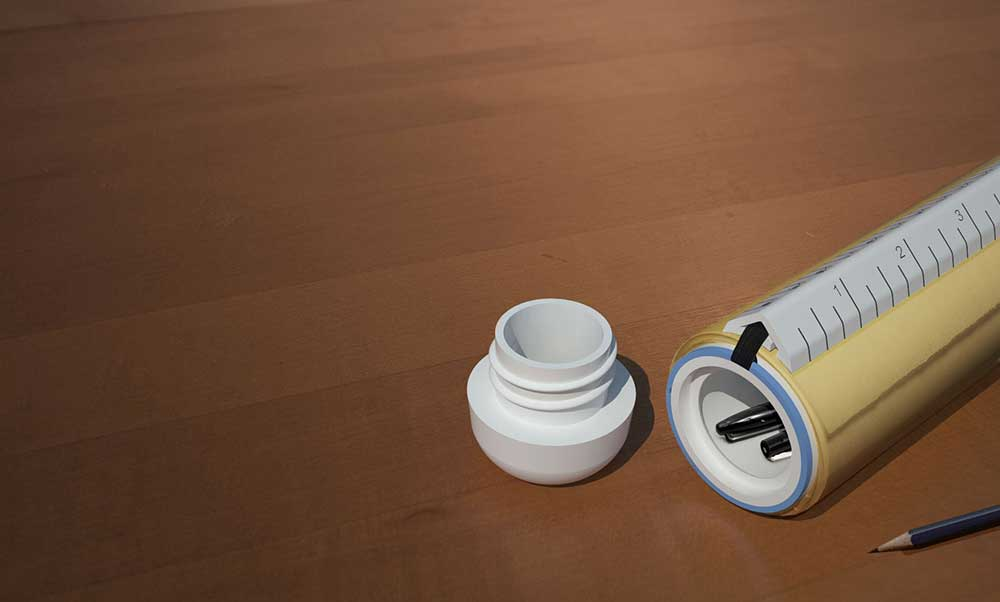

Design students can all relate to a few key things: all-nighters, intense project timelines, and a plethora of tools key to the creative process: felt-tip pens, scale rulers, exacto knives, and some type of sugar (I prefer Skittles!). It's not a common sight to lose any of those things, and constantly asking your peers for a spare pen or exacto knife can even be seen as a key part of the collaborative process to initiate an impromptu desk crit.

To the architect, designer, doodler and creator, rolls of tracing paper are staple in one's creative toolbox. The issue however is that the trace paper roll does not come with any means of closure. For all standard 12” trace paper rolls, TraceCase offers a way to transport trace and necessary drawing items in a tidy and efficient way.
The TraceCase is designed to take advantage of digital fabrication technologies; while the design primarily demonstrates its function for the typical 12” trace paper roll, modifications can easily be made through 3D printing to adapt the size and length to any other type of paper roll, making the product accessible to other uses.
This project received an Honorable Mention from the Extreme Redesign Competition, 2012.